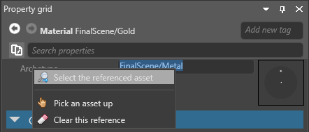

Archetypes
Warning
Приносим свои извинения за неудобства. Для этой страницы нет перевода на русский язык. Она будет отображаться на английском языке.
Intermediate Designer
An archetype is a master asset that controls the properties of assets you derive from it. Derived assets are useful when you want to create a "remixed" version of an asset.
For example, imagine we have three sphere entities that share a material asset named Metal. The Metal asset has properties including color, gloss, and so on.
If we change a property in the Metal asset, it applies to all three spheres. So, for example, if we change the color property, all three spheres change color.
Now imagine we want to change the color of only one sphere, but keep its other properties the same. We could duplicate the material asset, change its color, and then apply the new asset to only one sphere. But if we later want to change a different property across all the spheres, we have to modify both assets. This is time-consuming and leaves room for mistakes.
The better approach is to derive a new asset from the archetype. The derived asset inherits properties from the archetype and lets you override individual properties where you need them. For example, we can derive the sphere's material asset and override its color. Then, if we change the gloss of the archetype, the gloss of all three spheres changes.

You can derive an asset from an archetype, then in turn derive another asset from that derived asset. This way you can create different layers of assets to keep your project organized:
Archetype
Derived asset
Derived asset
Derive an asset from an archetype
In the Asset View, right-click the asset you want to derive an asset from and select Create derived asset:
Game Studio adds a new derived asset to the project. This asset derives its properties from the archetype asset.
The derived asset properties display the archetype asset under Archetype:
You can right-click the archetype asset in the Property Grid and select Select the referenced asset to quickly select the archetype asset:

Overridden properties
The Property Grid shows which properties of the derived asset differ from the archetype. Overridden and unique properties are white, and inherited (identical) properties are gray.
In this screenshot, the Diffuse Map property is overridden. The other properties are inherited:

Reset a property to archetype value
You can reset overridden or unique properties of a derived asset to the values in the archetype. To do this, right-click the overridden property and select Reset to base value.
Clear an archetype
You can remove the link between the archetype and the derived asset. This means the derived asset no longer inherits changes to the archetype; it becomes a completely independent.
To do this, in the Asset View, right-click the derived asset and select Clear archetype.